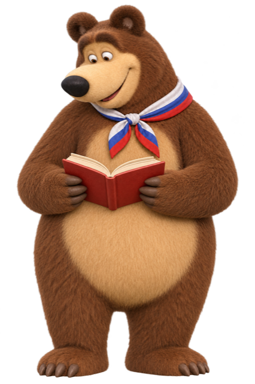

Приве́т! Я Ди́ма. ¡Hola! Soy Dima.
Ruso desde cero
Ruso desde cero hasta B2, explicado en español. Treinta minutos al día.

- Sin registroNi cuenta ni correo. Abres y estudias.
- Treinta minutosUna lección al día, con su reloj.
- Del alfabeto al B2Cuatro niveles, 1.460 lecciones.
Tu progreso se guarda solo en este navegador: no hay registro ni cuentas.
Explora el ruso
 Escucha
Escucha Lectura
Lectura Escritura
Escritura Conversación
ConversaciónEl camino Nivel A1 — elemental · 24 unidades
Cuatro niveles, uno por año a lección diaria. A dos lecciones al día, la mitad de tiempo.
Qué es
Un curso de ruso completo y gratuito que va del alfabeto al nivel B2: cuatro niveles de 365 lecciones, una por día, de treinta minutos. A una lección diaria, un nivel por año; a dos, B2 en dos años.
Está escrito para hispanohablantes. Cada lección te dice dónde el español te ayuda —la erre, la ch, el género, «me gusta», la doble negación— y qué error te va a hacer cometer, antes de que lo cometas.
Cómo es una lección
Treinta minutos con reloj, en seis partes: calentamiento con lo de días anteriores, fonética, lo nuevo, práctica, tu turno —hablar o escribir tú— y cierre. Todas las palabras rusas llevan marcada la sílaba tónica, que en ruso no se puede adivinar. Las respuestas están debajo de cada ejercicio, plegadas.
Hecho para estudiar solo
Los manuales de ruso están pensados para una clase con profesor: la mitad de sus tareas son «trabajen en parejas». Aquí cada tarea tiene su versión para una persona sola, con un modelo que escuchar y tu parte para decir en voz alta.
En qué punto está
El curso se está escribiendo y se publica a medida que avanza: hoy hay 56 lecciones disponibles. Las que llevan el aviso de borrador todavía no pasaron la revisión final.